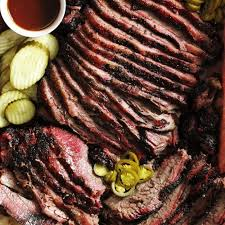

Beef Brisket

Description
To-die-for Beef Brisket that really makes the most out of this cut of beef! This Slow Cooker brisket is cooked in a simple homemade
BBQ sauce until it’s deliciously tender and infused with incredible flavour. Serve with a side of Coleslaw or Macaroni Salad and steamed corn.
Or pile high onto rolls and make sliders!
Ingredients
- Nice flavorful rub for brisket
- BBQ Sauce or sauce of preference
- Brisket in decent quantity
- Slow Cooker
Cooking Instructions
- Rub brisket all over with seasoning rub and leave for 30 minutes
- Add sauce of choice and brisket into slow cooker and cook for 8 hours
- Remove brisket and pour liquid into a saucepan over medium high heat
- Bring to simmer and reduce heat until it thickens to a syrup consistency
- Drizzle brisket with oil then roast in oven at 350degrees farenheit for 15 minutes
- Remove and baste generously with sauce then return to oven for 5 minutes
- Repeat last step until it looks as you would like it
- Slice thinly across the grain and serve with remaining sauce. Enjoy!